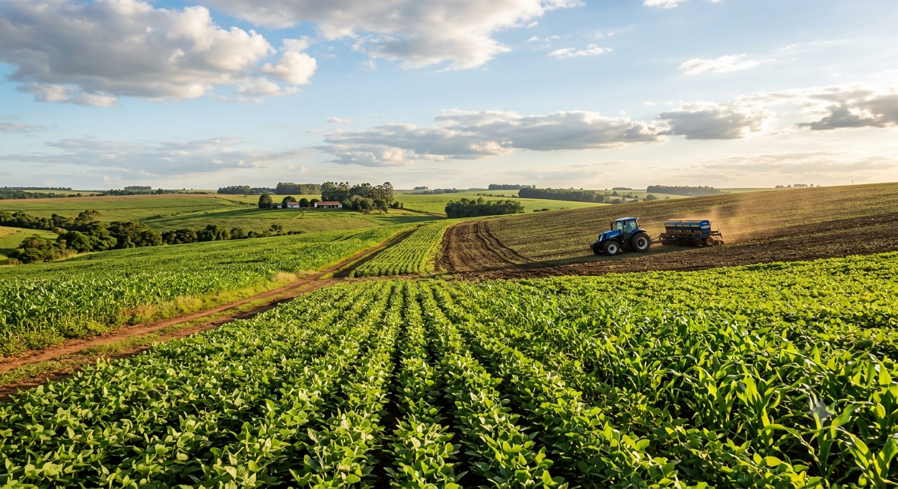
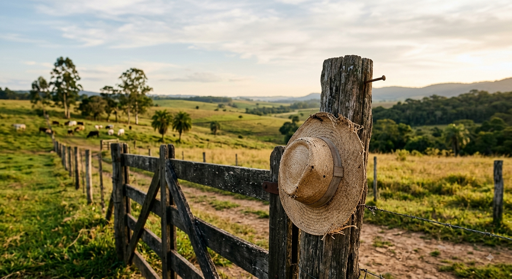
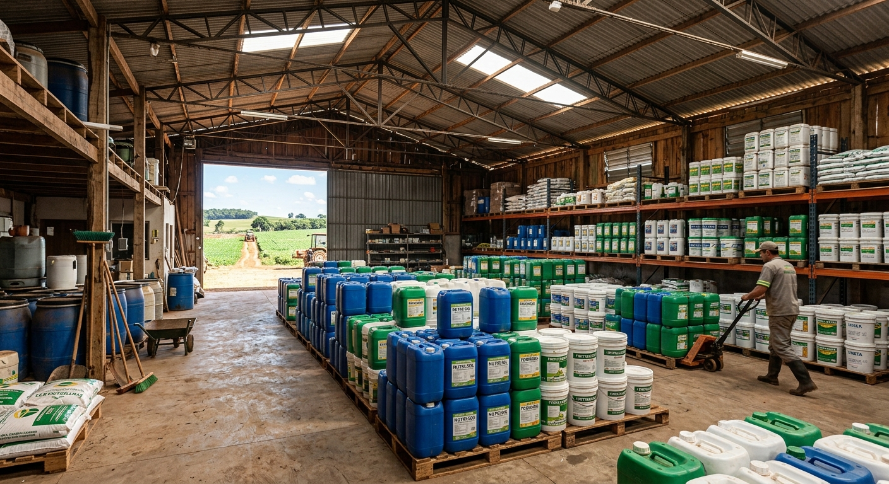

Vou compartilhar conhecimentos sobre Agricultura, Pecuária e Agropecuária.

Meu primeiro post
Por: João
Gurizada!! Boas-vindas ao meu novo blog! Aqui vou compartilhar dicas muito importantes e curiosidades sobre a vida no campo

Meu Segundo post
Por: João
Gurizada!! Boas-vindas ao meu Segundo Post! Aqui vou compartilhar o porque do uso de FERTILIZANTES AGRÍCOLAS em suas plantações!!

O que são os Fertilizantes Agrícolas?
Eles são nutrientes que alimentam o solo e as plantas (compostos principalmente por Nitrogênio, Fósforo e Potássio — o famoso NPK).
Quais são suas Principais Funções?
O Nitrogênio (N): Faz as folhas e caules crescerem verdes e fortes.
O Fósforo (P): Fortalece as raízes e ajuda na floração e frutos.
O Potássio (K): Protege a planta contra doenças e ajuda na absorção de água.
Por Que usar?
1-Aumentam a produção em menos espaço; 2-Repõem o solo, evitando que a terra fique fraca após cada colheita; 3-Garantem a qualidade dos alimentos (frutos maiores, mais bonitos e resistentes); 4-Ajudam na segurança alimentar, permitindo produzir mais comida para a população global;